A screen eyedropper
Pick from anywhere on screen, not only from Revit: a reference image, a brand guide, a consultant’s PDF, or a view in another window.
What it doesNative add-in for Revit 2025–2027
Click Pick-It, then click any pixel on any monitor. The button turns into that colour and shows its red, green and blue values, ready to type into any Revit colour dialog.
One button. One job.
Revit’s colour dialogs ask for red, green and blue. Pick-It gets those three numbers from anything on your screen and keeps them in view while you work.
Pick from anywhere on screen, not only from Revit: a reference image, a brand guide, a consultant’s PDF, or a view in another window.
What it doesThe screen freezes while you pick. A magnifier shows the pixel under the pointer with its RGB and hex values before you click.
How picking worksAfter a pick, the ribbon icon is filled with the colour and shows R, G and B in black or white, whichever reads better. The tooltip adds the hex code.
Icon behaviourShift-click the button for your last ten picks. Click one to make it the current colour again. They are kept between Revit sessions.
The Shift menuStore the current colour in one of the 16 custom-colour slots of Revit’s own Color dialog, so it is one click away wherever Revit asks for a colour.
Add to paletteThe idle icon and the menu follow Revit’s light or dark theme and switch with it. Pick-It also works with no project open.
See it in darkFrom screen to ribbon
There is no window to manage and nothing to set up. The button on the Add-Ins tab is the whole interface.
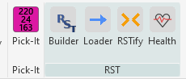
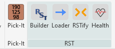
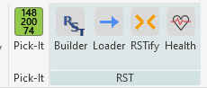
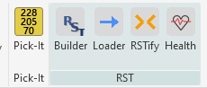
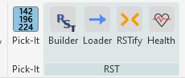
Open Revit’s Add-Ins tab and click the Pick-It button. The screen is frozen so nothing moves while you choose.
Move the magnifier over the colour you want and click. Esc or a right-click cancels and keeps the colour you had.
The button now shows the colour and its R, G and B values. It stays that way, across Revit sessions, until you pick again or clear it.
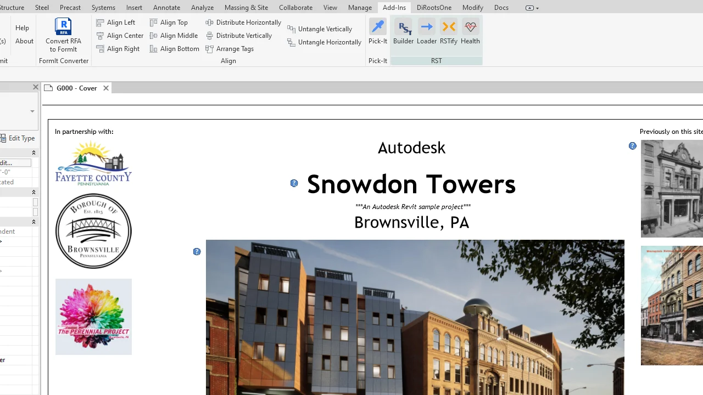
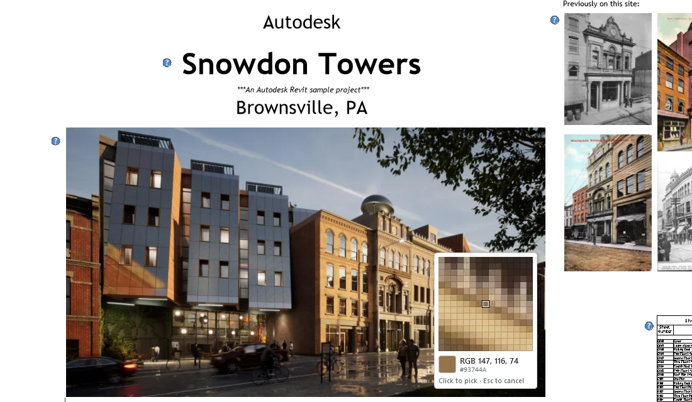
Into Revit’s own Color dialog
Add to palette… shows Revit’s 16 custom colours as the Color dialog lays them out. Click a slot and Pick-It stores the current colour there.
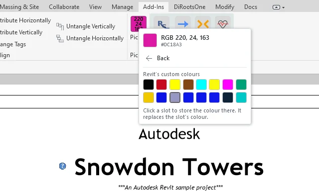
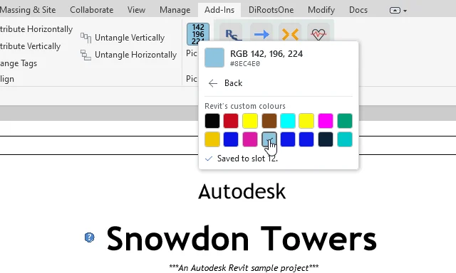
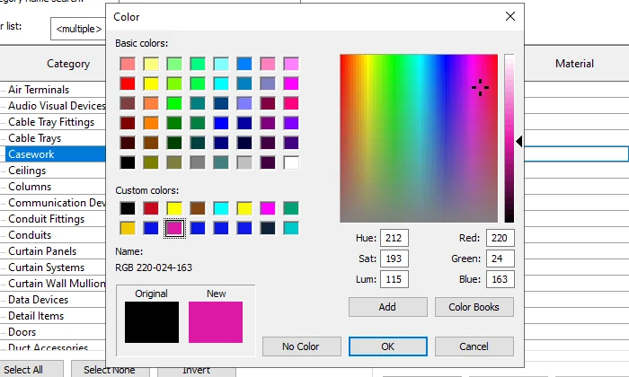
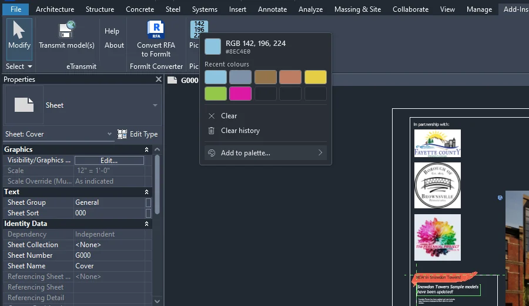
At home in Revit
Pick-It uses Revit’s light or dark theme for its idle icon and its menu, and changes when you switch. Your current colour and recent colours are shared by every Revit version you have installed.
Clear by design
Run the MSI, restart Revit, and choose Always Load when Revit asks about the add-in. Pick-It installs for your Windows account only and needs no administrator rights.
Read the installation guideReady when you are
Get Pick-It for Revit 2025, 2026, and 2027. One per-user MSI installs the add-in for every supported Revit year it finds.